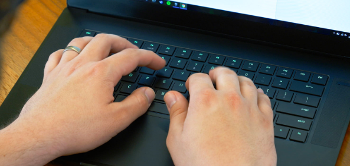
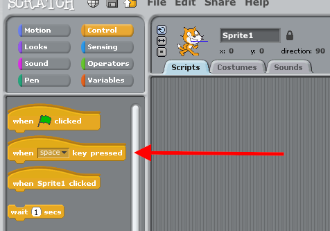
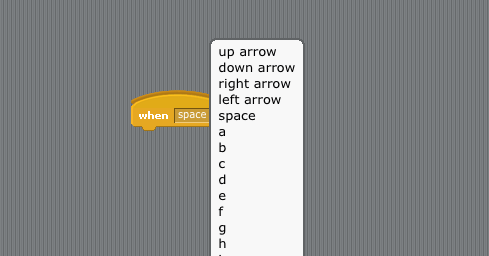
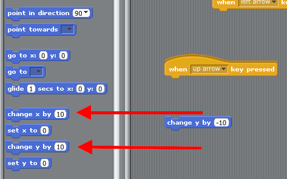
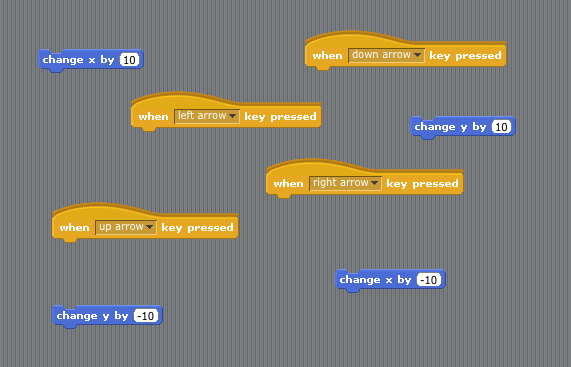

Teaching Point
Students will learn how to use the keys on the keyboard to control their app.
Controlling our Game
When we play games on the computer, usually we can control it using the keyboard. What games can we think of that we use the keyboard to play?
In Scratch, it's easy to make the buttons on the keyboard into controllers. We find the code block for that in the yellow menu. It says "When Space Key is Pressed", but we can switch the key from the space key to any other key we want.
 Making a game where we move our characters around with the keyboard is easy. We put a "When Key is Pressed" block together with a "Change X/Change Y" block.
 Today's Assignment
Make code blocks that let you use the up, down, left, and right arrow keys on the keyboard to move your character up, down, left and right
Extra Credit
When you're done with that, try making a special button that uses code that you found to make your character talk, or change costumes.
Back to School Portal